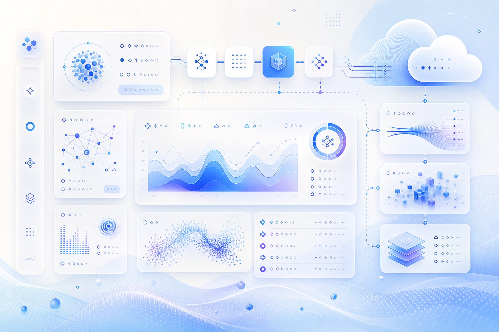
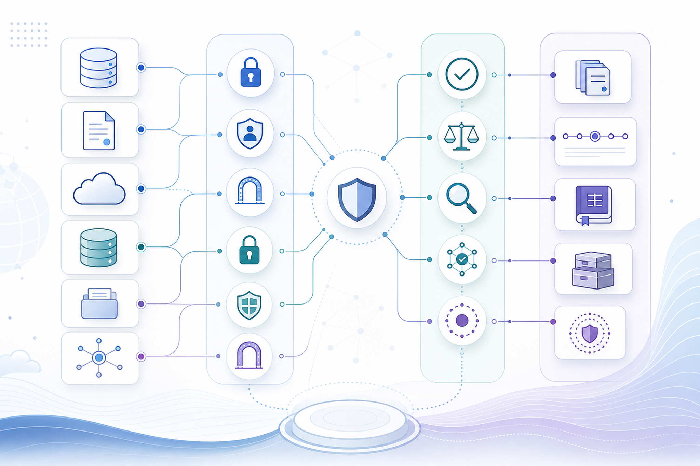

자료 1
전문 서비스 조직의 인공지능 네이티브 개발 방식 전환 사례
조직 내부 개발 방식과 도구 활용 방식을 함께 바꾸는 사례입니다. 최신성은 확인 필요이며, 기업 적용 시 역할 배분과 검증 기준을 함께 점검해야 합니다.
생성형 인공지능개발 생산성조직 운영
원문 보기
신규 저장 글과 최근 24시간 내 로컬 자료가 없어, 가장 최근에 저장된 로컬 자료를 보조 입력으로 사용했습니다. 최신성은 확인 필요입니다. 따라서 오늘 브리핑의 최신성 판단은 최신성 확인 필요로 표시합니다. 본문은 확인된 수집 자료에서 관찰되는 변화만 근거로 정리했습니다.
핵심 요약
관찰된 자료는 아마존웹서비스의 생성형 인공지능 서비스와 데이터 자동화가 단일 기능 소개를 넘어 실제 업무 흐름에 연결되는 사례를 보여줍니다. 다만 오늘 신규 수집 자료가 아니므로 최신 발표 여부와 리전·가격·기능 가용성은 확인 필요입니다.
관찰 사실
전문 서비스 조직의 개발 방식 변화와 에이전트형 자동화 사례가 함께 포착되었습니다. 이는 도구 도입보다 업무 절차, 검증, 역할 배분이 함께 바뀌어야 함을 시사합니다.
근거 출처
문서 처리 파이프라인, 회의 준비와 후속 조치, 업무 운영 자동화 주제가 최근 자료에 포함되어 있습니다. 기업 적용 시 데이터 출처, 접근권한, 결과 검수 책임이 핵심 검토점입니다.
검토 포인트
에이전트형 워크로드는 결과 품질뿐 아니라 도구 호출, 비용, 권한, 감사 로그가 함께 관리되어야 합니다. 수집 자료만으로 실제 운영 성숙도는 확인 필요입니다.

| 자료 주제 | 관련 기술 | 해석 상태 |
|---|---|---|
| 전문 서비스 조직의 인공지능 네이티브 개발 방식 전환 사례 | 생성형 인공지능, 개발 생산성, 조직 운영 | 확인 필요 |
| 문서 처리 파이프라인을 생성형 인공지능 서비스로 설계하는 방식 | 문서 자동화, 데이터 추출, 업무 검수 | 확인 필요 |
| 회의 준비와 후속 조치를 돕는 지능형 비서 구성 방식 | 회의 자동화, 협업 도구, 권한 관리 | 확인 필요 |
| 소유권 업무 자동화를 위한 에이전트형 인공지능 적용 사례 | 업무 자동화, 에이전트형 인공지능, 운영 검증 | 확인 필요 |
| 인공지능 네이티브 개발 방식의 재구성 | 개발 방식, 품질 관리, 팀 운영 | 확인 필요 |
| 청사진 추출 정확도 개선을 위한 데이터 자동화 접근 | 데이터 자동화, 문서 이해, 정확도 평가 | 확인 필요 |
표는 이번 실행에서 신규 저장된 자료가 없을 때 로컬 최신 자료를 보조 입력으로 사용한 결과입니다. 최신 발표 여부는 확인 필요입니다.
문서 처리, 회의 보조, 운영 자동화처럼 실제 업무 단위에서 입력 데이터, 승인 단계, 결과 검수자를 먼저 정의해야 합니다.
생성형 인공지능 기능은 호출량, 문서 크기, 검색 범위, 재시도 횟수에 따라 비용과 지연시간이 달라질 수 있습니다.
에이전트가 데이터와 도구를 사용할수록 사람의 승인 경로, 실패 시 중단 조건, 로그 보존 정책이 중요해집니다.

오늘 신규 글이 없다는 점은 전략 판단에서 중요합니다. 최신성이 확인되지 않은 자료를 바탕으로 신규 서비스 출시나 기능 가용성을 단정하지 않아야 합니다. 대신 보조 자료에서 반복되는 패턴인 문서 자동화, 회의 보조, 에이전트형 업무 처리, 평가 체계를 후보 검토 항목으로 유지하는 것이 안전합니다.
자료 1
조직 내부 개발 방식과 도구 활용 방식을 함께 바꾸는 사례입니다. 최신성은 확인 필요이며, 기업 적용 시 역할 배분과 검증 기준을 함께 점검해야 합니다.
자료 2
문서에서 정보를 추출하고 업무 판단에 활용하는 흐름을 다룹니다. 기업은 문서 품질, 권한, 검수 책임, 예외 처리를 함께 설계해야 합니다.
자료 3
협업 도구와 지능형 비서를 연결해 회의 전후 업무를 보조하는 흐름입니다. 일정·문서·대화 데이터 접근권한이 핵심 검토 대상입니다.
자료 4
반복 운영 업무를 에이전트형 인공지능으로 보조하는 사례입니다. 결과 정확도뿐 아니라 중단 조건과 사람 검토 지점을 정의해야 합니다.
자료 5
도구 자체보다 개발 절차, 품질 확인, 역할 분담이 바뀌는 신호로 해석됩니다. 실제 도입 효과는 조직 환경별 검증이 필요합니다.
자료 6
시각 자료와 문서에서 구조화된 정보를 추출하는 흐름입니다. 기업은 정확도, 예외 처리, 사람 검수 기준을 함께 설계해야 합니다.